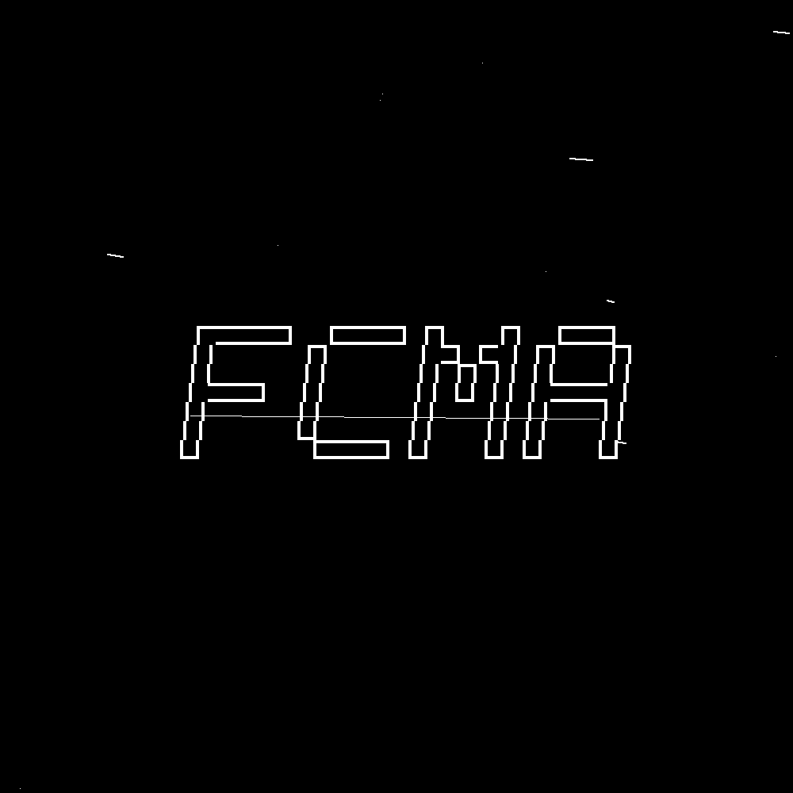

$FCMA
Feds Caught My Ass
$FCMA is the daily narrative shorthand: Packages the current AI-agent timeline into a no-utility culture coin.
Unofficial no-promises culture coin for the Feds Caught My Ass meme. No roadmap, no utility claim, no affiliation, no hidden buys; creator may earn platform fees only from real trading.

Affiliation none
Roadmap none
Creator buys no hidden buys
Why This Exists
$FCMA is the scuffed wrapper for this rotation: one scuffed symbolic object tied to the source. Unofficial, no roadmap, no affiliation, no hidden buys.
This page is the stable metadata website. If the token is created, update this page with the Pump.fun URL, mint, and first-hour outcome notes.
Context Links
- source tweet Current X trend: viral posts mock AI models failing a jailbreak prompt; popular phrase became feds caught my ass
Receipts
- Unofficial culture coin. No government, platform, project, or source affiliation.
- No roadmap, no utility claim, no return promise, no hidden bundled buys.
- Creator may earn platform fees only if real third-party trading appears.
- Current local launch gate at page generation: blocked.